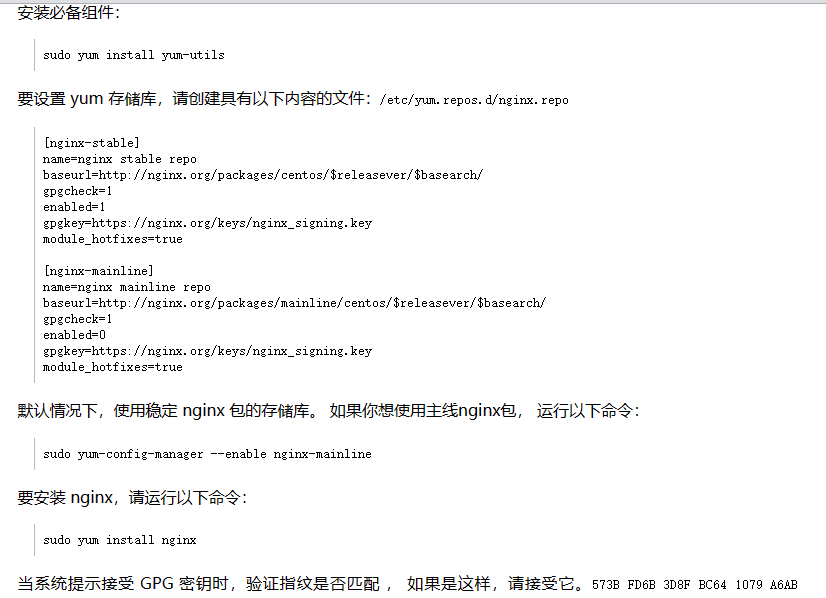
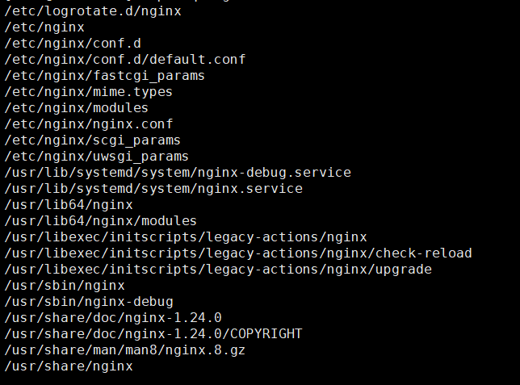
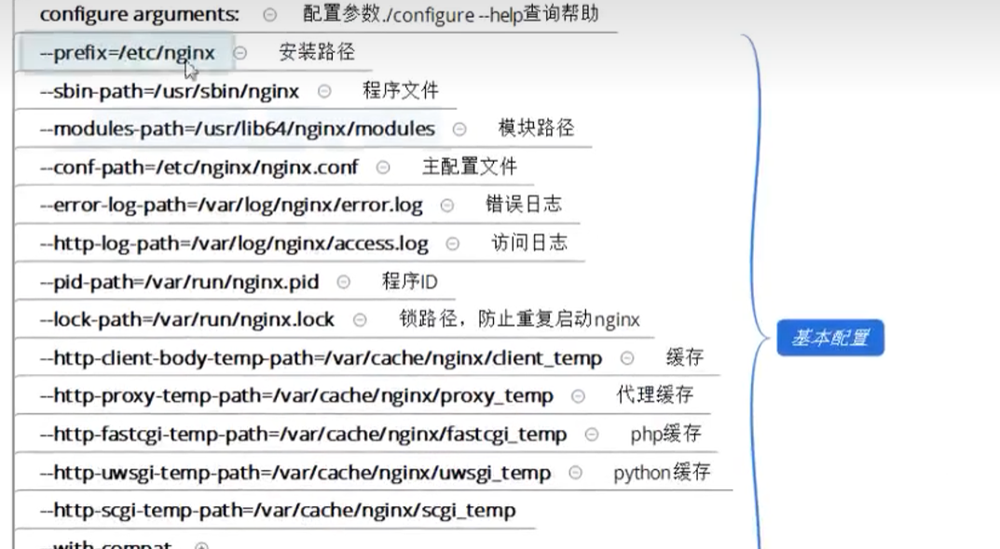

运维中段学习-二
Nginx
Nginx的简介
1 | nginx可以用来做http服务与反向代理服务器。 |
Nginx的优势
1 | IO多路复用 |
IO多路复用
1 | 第一种方法：最传统的多进程并发模型（每进来一个新的I/O流就分配一个新的进程管理） |
HTTP协议详解
1 |
Nginx 部署-yum

Nginx配置文件

1 | rpm -lq nginx ----查看nginx所有文件和路径的列表 |
Nginx编译参数

Nginx虚拟主机
1 | /etc/nginx/conf.d/default.conf |
Nginx日志Log
日志相关配置
- 相关指令
1 | log_format ---日志格式 |
- 日志的格式与命令
1 | log_format |
- 访问日志和错误日志
1 | access_log |
- 日志缓存
1 | 大量访问到来时，对于每一条日志记录都是先打开文件，再写入文件，然后关闭文件，这样会占用大量的系统IO，所以可以用open_log_file_cache来设置。即用缓存来先记录日志。可以再/etc/nginx/conf.d/目录下的相应网站配置文件配置 |
- 日志轮转
1 | 再/etc/logrotate.d/nginx文件下 |
本博客所有文章除特别声明外，均采用 CC BY-NC-SA 4.0 许可协议。转载请注明来自 Xiaoye456的个人博客！